Controller Box
With the structure of the control panel determined, it needs something upon which to rest. With the devices installed, the bottom of the panel will not exactly be the most durable or level structure by itself. The shaft hangs out the bottom of the joystick and needs to be able to move freely.
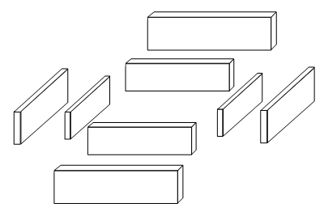
Designing the controller box is more simple than the control panel, but it is also where a lot more creativity can be used. There is a large variety of ways to attach and resize pieces, so a few techniques can be used in many ways.
The main requirements for the custom controller box is that everything has room to fit where it’s going and the bottom of the joystick’s shaft has room to move. Like in the control panel, find material that has flat, even edges so the box comes together nicely; engineered materials are definitely not needed though.
Joining Corners
Turning boards into a box is just a matter of fitting corners together.
The corners of box sides can be fit together in many ways. They can interlock by making square grooves (usually called a finger joint) or dovetails (using a router and probably a jig; this is called a dovetail joint). They can be cut to 45 degree angles like in a standard frame using a saw or a chamfer router bit (this is called a miter joint). Or they can be placed flat against one another with one of the sides taking the place of the corner (this is called a butt joint).
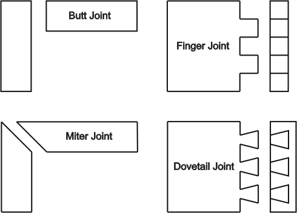
Image: Examples of corner joints
These are a few ways to attach corners. Some other joints can be used.
Controller Box Designs
As already stated, the design-type of the suspending box is not really dependant on the design-type of the panel layout and layering. The relations will be mainly in measurements and proportions.
The control panel design in each diagram is just there to complete the image and has no bearing on the controller box. Pretty much any panel design can be used on any box design. Also note there is a variety of fasteners, like glued dowels or grooves instead of screws, to hold the design together.
Plus note that the sides of a box can have a mix of designs; a different design from the other sides is often used on the front side.
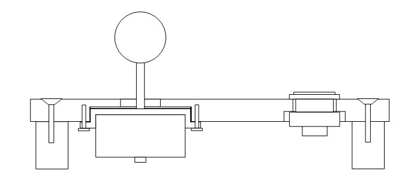
Image: Control panel given legs to support it
A simple solution could be making your control panel look like a table by adding a leg to each corner or a couple long legs along opposing sides. Some people do build joysticks into their coffee table after all. But you would have to deal with the vulnerable insides.
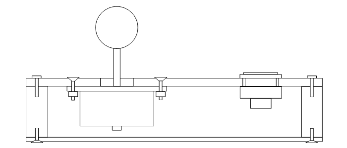
Image: Very simple single controller box
Using a single box can be very simple. The panels just get flatly attached to the top and bottom of the box. The downside to this is the panel edges are not very attractive and may scrape.
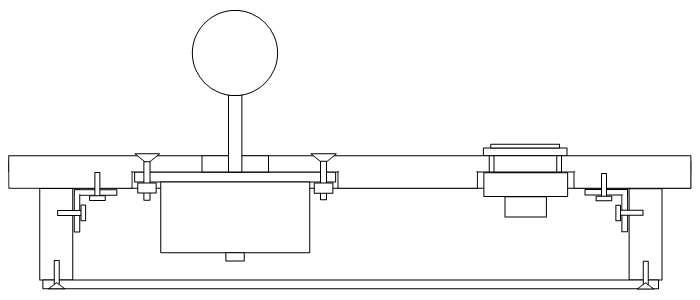
Image: Very simple single controller box with a larger control panel
A control panel larger than the controller box is a popular design. Corner braces and groove routing can help bring it together. Some T-edging often goes around the sides of the control panel.
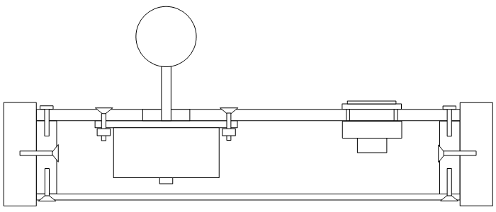
Image: Double box, or box with blocks to support the control panel in a single box
The most popular design in quality custom arcade controllers is in this diagram; the diagram can represent many things, which can all be used. The box may contain another full box to support the panel. The box may contain only three or two of the sides of the box for support. Or the box can be filled with isolated supports held to the side of the box, most commonly put in the corners, but also can be put in other places along the outside box. The inside box or supports can be attached to the outside box using screws or dowels or simple glue if the surfaces are large enough. This simple design gives a nice, smooth surrounding for the panels.
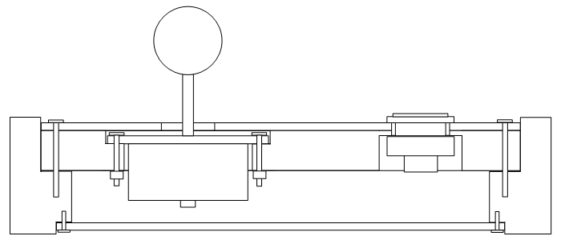
Image: Single box routed to fit the control panel
Instead of two boxes, the surroundings for the panels can be routed or sawed into a thicker box. The routing may just be done for the top layer of the panel.
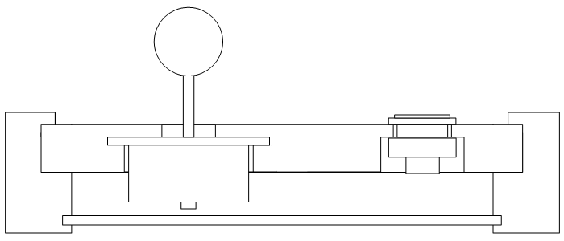
Image: Single box routed to hold the control panel
Some precision routing can prop the control panel into the sides of the box. This can also be designed just to contour one layer.
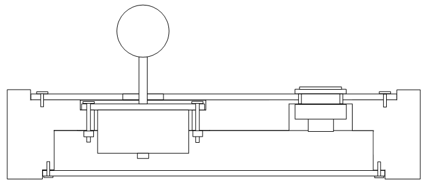
Image: Solid block routed into controller excluding top and bottom panels
Another option is taking a large single block the size of the entire control box and carving in every little place to fit the joystick, buttons, PCB, and wire. This is obviously leaves little room for error.
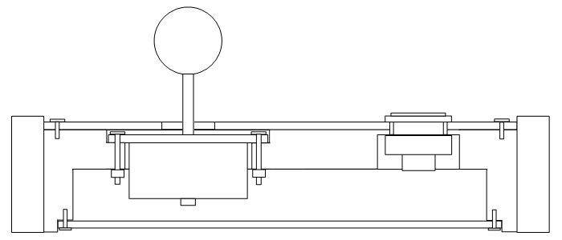
Image: Solid block routed into controller surrounded by side pieces
Also, a solid design can be made and surrounded by smooth sides. This could be done with fastened, layered insides.
Box Slanting
Joystick controllers can be more or less accessible from different positions. Flat controller boxes are perfectly accessible from an upper position such as from the lap or a low table. But when a controller is placed on a higher table like a desktop, a slight disadvantage comes from making it less accessible. This is where the controller should be slanted.
There are a couple options. With a flat controller, you can simply put the back feet of the controller on a step (like a thin board) to give it a slant (the feet need to be square for doing this). The other option, which is more difficult, is to give the box itself a slant. Usually boxes are slanted by making the front about 1/2" to 1-1/4" (12mm to 30mm) shorter than the back and transitioning between them; this gives the box an angle of about 4 to 10 degrees.
There are also a couple ways to slant the box itself. You can trim the bottom of the box at an angle, but this leaves the front and back of the box a bit crooked (it can be trimmed though). The other way is to slant the top of the box and contour the supports and panels (or top insides of the box) at the same angle so they fit in the same way. The slants can be made using angled templates or miters or bevels in a table saw, or using a slant in a planer (this can be done with a router and a jig as well), or other creative angled cutting.
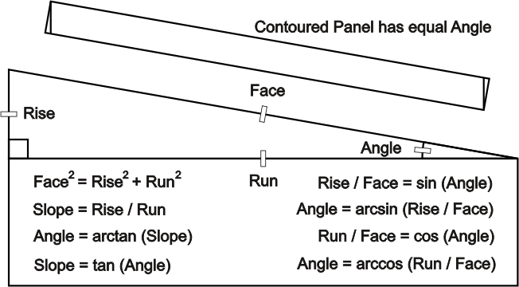
Once a slope and/or angle is determined, it can be used throughout the controller to make things fit together properly. Determining the slope and angle and other dimensions takes a bit of math as shown in the image (note that arcsin arccos arctan are the same as sin-1 cos-1 tan-1). In slanting the top, usually the control panel is about 1/8" (3mm) longer than the base beneath it, so the box dimensions are usually slightly shorter from front to back to accomodate the panel more accurately; use the equations for exact numbers.
Box Thickness
The flat dimensions of the controller have been discussed, so it is now time to discuss the other dimension. Generally, it is best to make the box as thin as possible while still comfortably housing the devices and other things.
The thickness of the box is usually determined by three factors: The thickness of the base panel, the length of the joystick's shaft, and the buffer for safety (I recommend about 1/16" or 2mm). In the case of the joystick's shaft, it will be the total length of the shaft minus the minimum part of the shaft that protrudes from the control panel face. So the minimum thickness of the box is usually equal to the base panel thickness plus the inside joystick shaft length plus a buffer.
For a slanted box this becomes a little more complicated. This minimum thickness needs to be assessed for the front and back of the box. Measuring the distance of the joystick to the front of the box and back of the box and using the equations can help. The easiest way to figure things is by using the slope. Multiply the slope times the distance of the joystick to the front of the box and subtract it from the determined thickness to get the height of the front; do the same but use the distance to the back and add it to get the back of the box. Make sure the final numbers make sense.
The joystick shaft is usually the deepest part, but in rare cases the buttons can go lower. Also certain other things may be wanted to fit inside that would increase the thickness. So basically the thickness makes sure that everything plus a base panel comfortably fits in the box.
Front Enhancement and Side Buttons
Because it is where the arms meet the controller, the front side for joystick controllers is often different from the others. It gets tucked under the front of the control panel, or made shorter than the other sides, or projects as a place to rest the wrists or forearms, or takes on some other shape that enhances the controller.
Like holes in the control panel, holes can also be made in the sides of the box for buttons. Putting a groove around the hole can help hide buttons so they are not accidentally hit, and/or it can make them actually fit. Putting these buttons in the sides is similar to putting buttons in the control panel. Forstner bits are usually best for doing this.
Layout, Layering, and Box Together
When you have decided what layout, control panel, and box design you want for your controller, and how all the devices will fit in the controller, you can determine the dimensions of your controller. Make sure to have comfortable space for your hands, and that there is clearance under the control panel for the devices (especially the joystick). Most custom panels range from 9"-12" (225mm-300mm) wide to 7"-9" (175mm-225mm) long, with the custom box adding about 1/4"-1" (6mm-25mm) along each side, and ranging from 1-5/8"-3-1/2" (40mm-95mm) high. Ideally, the controller should be as small (and fairly durable) as possible while filling the needs of the player and devices.
If you have a 3D drawing program, you can do even more fine tuning and definitively figure how you want your custom controller to look.
Also, look at the work done by different builders at different sites (like Joystick Vault link) for inspirations.
Make things easier when you can. Write and reference a summarized plan especially strongly noting measurements. Always label things even though it may feel dumb at times.
Try to make exact measurements and cuts in building the controller so things come together well. Having the materials with the proper dimensions come together at the correct angles with flush joints will be essential in making a great custom joystick controller. Things should fit together like a puzzle.
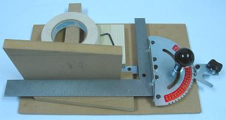
Image: Makeshift fixture to calibrate precisely a miter gauge
It cannot be over-emphasized, precision measurements and cuts make a good controller great. For this to happen, first the tools must be aligned properly; place a board in the miter gauge of a table tool to use as a direct surface to square the blade and fence, and make a fixture to calibrate jigs like the miter gauge. Use jigs and fixtures where possible, even when not using fixed tools. When using a surface to align things (like when you set and glue the box), make sure the surface is flat and clean. And remember, the main element in the controller box is the control panel supports, so make sure most of all these are aligned properly.
Here is the order of operations I currently prefer in a generic controller build (note different designs will have different needs):
- Shape the base control panel.
- Shape the control panel supports to fit the base control panel.
- Place the base control panel on the supports and attach them together (if using screws, follow-up by making the holes in the panel wide enough for the spirals on the screws barely to slide through).
- Shape the sides of the controller box to fit around the base control panel and supports, and the other panels that will be added later.
- Drill holes for side buttons and the cord in the box; make sure they have room to fit where you put them.
- Add dowel or screw holes if needed.
- Mask the base control panel (if you do not want it glued to the box; use wax paper if you can) and place the face of it on spacers the size of the panels to be added later; fasten the box together around this; make sure this is done on a flat, clean surface; make a box-securing template if you want things very precisely shaped.
- Shape the remaining panels.
- Remove the control panel and set the mountings for the buttons and joystick; use either hole bits in a template, or pilot holes down the center of a printout of the layout followed by hole bits of the right size.
- If you have a drill press, lay the joystick mounting plate squared against the base control panel and drill the holes for the bolts used to mount the joystick (like before, make the holes just big enough to slide the bolts through); if you do not have a drill press, do this after routing.
- Route space at the proper depth for the mounting plate, then space for the body the rest of the way if needed, both preferably using a template; route or drill space for the buttons if needed.
- Place the bottom panel against the supports and add holes for fastening it and rubber feet (again, later make holes in base panel wide enough to slide screws through); use a corner template if you want the legs symmetric.
- Decorate and finish the box and control panel.
- Put together the PCB and wiring under the control panel.
- Finishing the controller by mounting all the parts where they go.
Advanced Design
The designs given in this and the panel section are relatively simple. There are practically an infinite number of ways to put together a custom arcade controller.
If you feel like it, once you understand implementation of the main goals of durability and utility, you can put together your own unique designs. If you find a way to incorporate diverse materials in your design, more options will be available.
Simple box designs are usually best, but you can think outside the "box"! ... cough